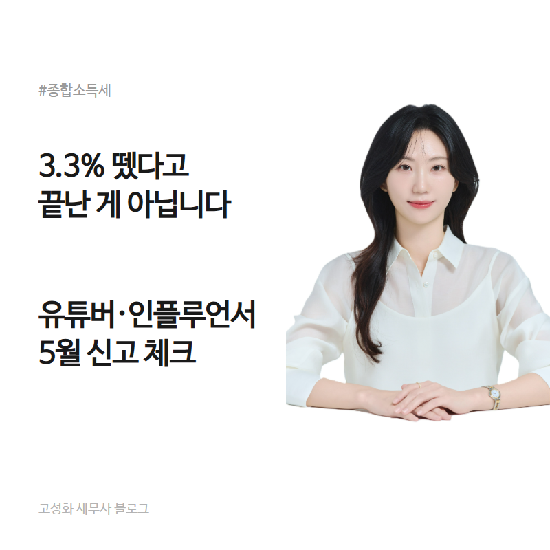

← 세무칼럼 목록
종합소득세·프리랜서
유튜버·인플루언서라면 필독, 3.3% 뗐다고 세금 끝난 게 아닙니다

이번 달에 브랜드 협찬비가 입금됐는데, 정산 내역을 보니 3.3%가 빠져 있었습니다. "어, 세금은 이미 낸 거네" 하고 넘기셨다면, 5월에 예상치 못한 고지서를 받으실 수 있습니다. 유튜브 광고 수익이든, PPL이든, 팬 후원금이든, 그 3.3%는 세금의 '끝'이 아니라 '시작'입니다. 특히 채널이 커지면서 협찬 건수가 늘어나고, MCN 정산에 개인 광고 계약까지 섞이기 시작하면 "대체 뭘 어떻게 신고해야 하나" 막막해지는 시점이 옵니다. 오늘은 유튜버·인플루언서가 꼭 알아야 할 종합소득세 핵심만 정리해드립니다.
이 글에서 다루는 내용
- 3.3%는 이미 낸 세금이 아니라 '미리 낸 세금'입니다
- 필요경비, 제대로 챙기지 않으면 세금만 늘어납니다
- 신고를 아예 안 하면 어떻게 되나요
정리하면
3.3% 원천징수는 세금의 끝이 아니라 시작입니다. 광고수익, PPL, 후원금을 합산해서 5월에 종합소득세로 정리하고, 촬영·편집 관련 지출은 증빙을 챙겨 필요경비로 인정받으시길 바랍니다. 혼자 정리하기 막막하시거나 작년과 수익 구조가 달라지셨다면, 성화세무회계에 편하게 문의해주세요. 기장부터 신고까지 함께 챙겨드리겠습니다.
본문 전체와 근거 조문은 블로그에서 확인하실 수 있습니다.